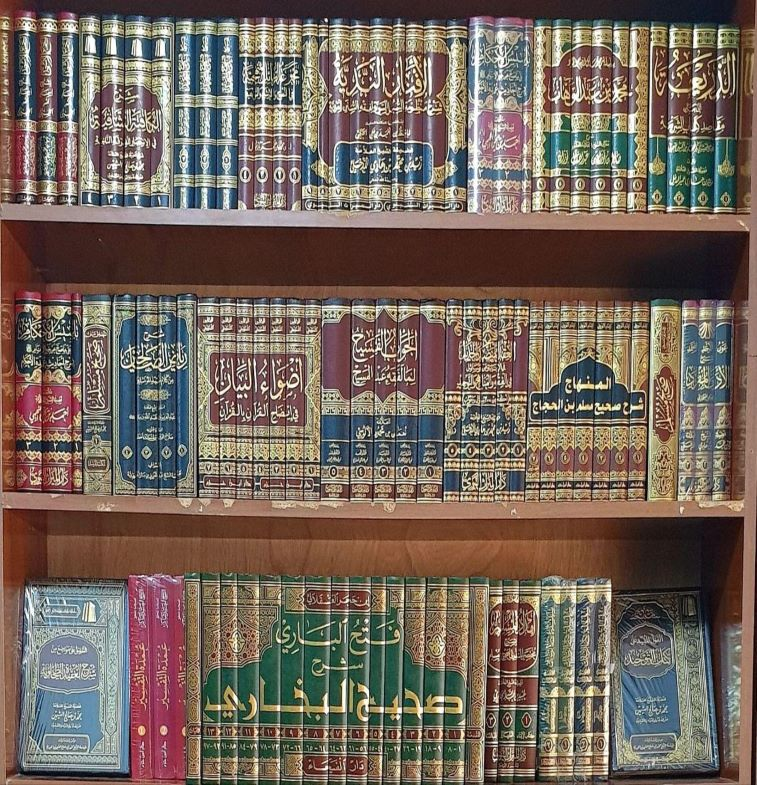
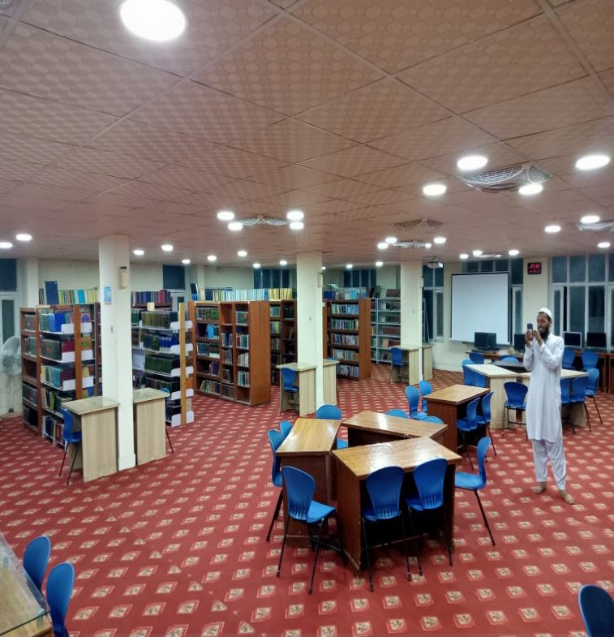

لائبریری کا تعارف
لائبریری" لاطینی" زبان کا لفظ ہے جو "لائبر "سےبنا ہے اس کا معنی ہے کتاب ،سادہ الفاظ میں یوں
سمجھئے
کہ
لائبریری اس جگہ کو کہتے ہیں جہاں کتابوں، رسالوں، اخباروں اور معلوماتی مواد کو جمع کیا جاتا ہے۔
اردواور
فارسی میں اس کےلئے کتب خانہ کا لفظ استعمال کیا جاتا ہے جب کہ عربی میں اس کا مترادف لفظ خزانة
الکتب
،مکتبہ اور دارالکتب ہے۔لائبریری دراصل ایسا عظیم مقام ہے جہاں ہزاروں سالوں کا فکری و علمی اثاثہ
لاکھوں
کروڑوں اربابِ علم و دانش کی ذہنی اور قلمی کاوشوں کا ثمرہ اور حاصل جمع ہوتا ہے۔ جہاں الہامی کتب،
بعض
انسانی استعداد اور شعوری وسعت کے مفاہیم کے لفظی مجموعے، محدّثین و مفسّرین کی تفاسیر و شروحات کا
مجموعہ،محققین و مفکرین کی تحقیقات و افکارکا علمی خزانہ، مصنفین و مترجمین کی کتب و تراجم ،انسانی
تحریرات
کا سرمایہ، علوم و فنون کی دولت،شاعروں، نثرنگاروں، ادیبوں اور خطیبوں کی قلمی فتوحات کا ذخیرہ یکجا
ایک
چھت
کے نیچے میسر ہوتا ہے۔ لائبریری میں داخل ہونے والا لاکھوں نابغہ روزگار صفحہ ہستی کے شاہکار لوگوں
سے
بغل
گیر اور ہم کلام ہوتا ہے اور ان کی فکری روشنی سے جہانِ ذہن و قلب کو جگمگاتا ہے ۔

لائبریری کی ضرورت اور اہمیت
کتب خانوں کا تصور بہت قدیم ہے اور زمانہ قدیم سے ہی کتب خانے معاشرے کی فکر اور علمی ترقی میں
مددگار رہے ہیں۔ کسی بھی عہد کی مجموعی ترقی میں علم اور فکر کا ہی دخل رہا ہے۔ کتابیں علم وحکمت کا
خزانہ ہوتی ہیں اور شعور وٗ ادراک کی دولت قوموں کو اسی خزانے سے حاصل ہوتی ہے۔ کسی بھی قومی معاشرے
میں کتب خانوں سے ایک طرف تو امن اور دوستی کی فضا پیدا ہوتی ہے جو قوموں کے افراد کے ذہنوں کو
تخلیقی اور تعمیری رجحانات دیتی ہے اور وہ تہذیب وتمدن سے آشنا ہو کر اتحاد و اتفاق سے زندگی
گزارنے کا فن سیکھتے ہیں۔ کتابوں کی حفاظت کی جائے جو ہمارا سرمایہ ہیں بلکہ جدید دور کے تقاضوں کو
پورا کرنے، سائنس اور ٹیکنالوجی کو سکھانے والی کتابوں کا اپنی زبان میں ترجمہ کرکے انہیں کتب خانوں
کی زینت بنایا جائے تاکہ ہر خاص و عام کی جدید علوم تک رسائی ہو اور ملک کی ترقی کے لئے نئی راہیں
کھل سکیں۔

مرکزی لائبریری جامعہ اسلامیہ امدادیہ فیصل آباد
جامعہ کے بانی شیخ الحدیث حضرت مولانا نذیر احمد صاحب کے پاس ایک مرتبہ امریکہ سے ڈاکٹر عبد القدوس ارشد صاحب
تشریف
لائے، وہ جامعہ کے لیے کسی رفاہی کام کی ذمہ داری لینے کی خواہش فرما رہے تھے۔ حضرت شیخ صاحب دامت
برکاتہم
کے مشورے سے انہوں نے جامعہ کے لیے ایک لائبریری کے قیام کے لیے کام فرمانا شروع کیا۔ اس کے لیے
انہوں نے
اپنے والد صاحب کے نام سے موسوم علم الدین لائبریری بنائی اور کافی عرصہ تک کتب فراہم کرتے رہے۔ پھر
کچھ
عرصہ کے بعد جب لائبریری کو وسعت دی گئی تو اس کو دو حصوں میں تقسیم کر دیا گیا۔ ایک علم الدین
لائبریری اور
دوسرا المکتبۃ المرکزیۃ۔ اور الحمد للہ اس وقت لائبریری ایک بین الاقوامی معیار کی لائبریری بن چکی
ہے۔
ادارے کی کوشش ہوتی ہے کہ طلباء کے لیے ہمارے اسلاف کی تمام مفید کتب فراہم کی جائیں تاکہ طلباء کو
تحقیق
میں آسانی ہو اور وہ ہمارے اسلاف کی محنتوں، کوششوں اور مجاہدہ سے متعلق آگاہی حاصل کر سکیں۔ اللہ
تعالی سے
دعا ہے کہ اللہ تعالی اس جامعہ کو اور اس کے ہر ہر شعبے کو دن دوگنی رات چوگنی ترقی عطا فرمائیں۔
آمین
شیخ الحدیث حضرت مولانا محمد زاہد صاحب
نائب صدر جامعہ حضرت مولانا مفتی محمد زاہد صاحب دامت برکاتہم العالیہ کی شفقت و سرپرستی خصوصی طور
پر لائبریری کو حاصل ہے۔ حضرت محترم خود لائبریری کے امور کی نگرانی فرماتے ہیں اور وقتا فوقتا کتب
بھی ارسال کرتے رہتے ہیں۔ حضرت کی خصوصی محبت اور شفقت حاصل ہونے کی وجہ سے ہی آج جامعہ کی لائبریری
کا شمار بہترین لائبریریز میں کیا جاتا ہے۔ استاد محترم طلباء سے بھی انتہائی شفقت فرمانے والے ہیں۔
طلباء کسی بھی وقت اگر راہنمائی کے لیے استاد محترم کے پاس جانا چاہیں تو جا سکتے ہیں اور استاد جی
بھی خوشی خوشی راہنمائی فرماتے ہیں۔ اللہ تعالیٰ حضرت کے فیوض و برکات ہم پر ہمیشہ قائم
رکھیں اور انہیں صحت والی عمر طویل عطا فرمائیں۔ بلاشبہ حضرت نا صرف جامعہ کا بلکہ امت کا بہترین
سرمایہ ہیں۔
حضرت مولانا مفتی محمد زبیر صاحب
ادارہ کی طرف سے جامعہ کی لائبریری اور کمپوٹر لیب کا انتظام کچھ سال پہلے استاد محترم اور ہمارے
مشفق و مربی حضرت مولانا مفتی محمد زبیر صاحب کے سپرد کیا گیا۔ جنہوں نے اپنی دن رات محنت، کوشش اور
لگن سے ادارہ کے انتخاب کو درست ثابت کیا اور لائبریری کو جدید سے جدید تر بنانے میں ہمیشہ سرگرداں
رہے۔ استاد محترم کو اللہ تعالیٰ نے عظیم دینی قابلیت کے ساتھ ساتھ ٹیکنالوجی اور دیگر عصری علوم
میں بھی مہارت عطا فرمائی ہے۔ جامعہ میں جتنے بھی ہنر مند طلباء موجود ہیں یا فارغ التحصیل ہو چکے
ہیں وہ استاد محترم ہی کے زیر سایہ دینی اور عصری علوم میں ترقی کرتے رہے ہیں۔استاد محترم انتہائی
شفیق اور طلباء سے محبت
فرمانے والے ہیں۔ یہی وجہ ہے کہ ناصرف علمی مسائل میں طلباء استاد محترم کی طرف راہنمائی کے لیے
متوجہ ہوتے ہیں بلکہ وہ استاد جی سے ہر طرح کی راہ نمائی لیتے ہیں۔ اللہ تعالیٰ میرے استاد محترم کو
صحت والی لمبی زندگی عطا فرمائیں۔